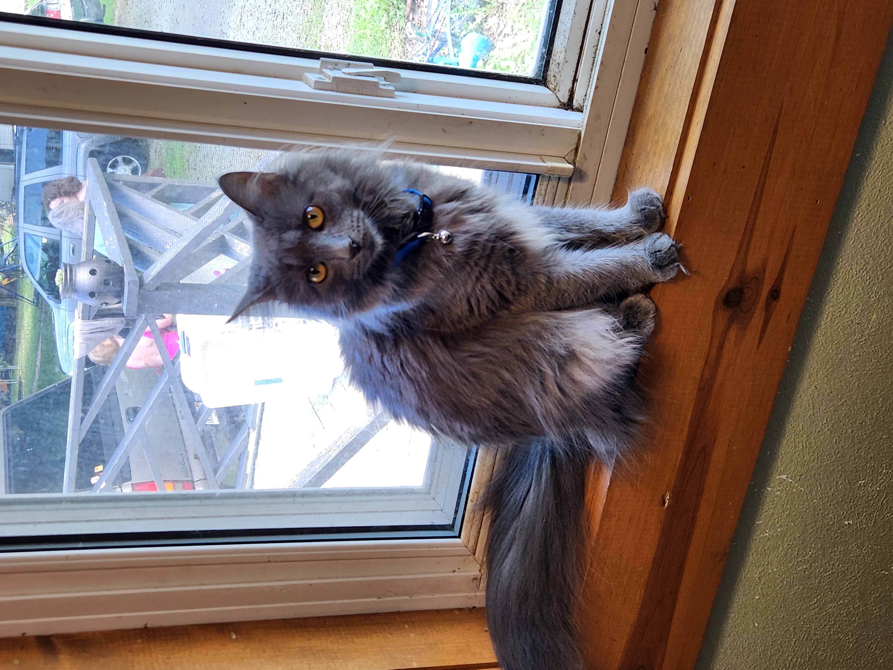

Cats!
I like cats, so I chose to make a HTML about them! I have had a few over the last
few years, but here are two of my favorites
Remah
Here is a picture of Remah.

A few facts about her are:
- Remah is about 8 months old.
- She enjoys knocking my mom's plants off the windowsill.
- Remah also enjoys playing with plastic beaded necklaces.
Personality
Personality wise, Remah reminds me the most of emperor Kuzko from the Emperor's New
Groove, because she is sassy and is very vocal about it. My family will often 'voice' what we think
she is thinking/saying. She also has a bit of a racoon vibe
going on with her little ear tuffs and general demeanor around finding things that she shouldn't eat.
Other things to know about Remah
Remah is rather small for a cat, and besides being rambunctious, she comes from a barn cat heritage (for lack of a better term), but has very fluffy, silky fur.
She likes to play with my dad after he comes home from work, as well as play with my siblings throughout the day.
I wouldn't trade Remah for any other cat!